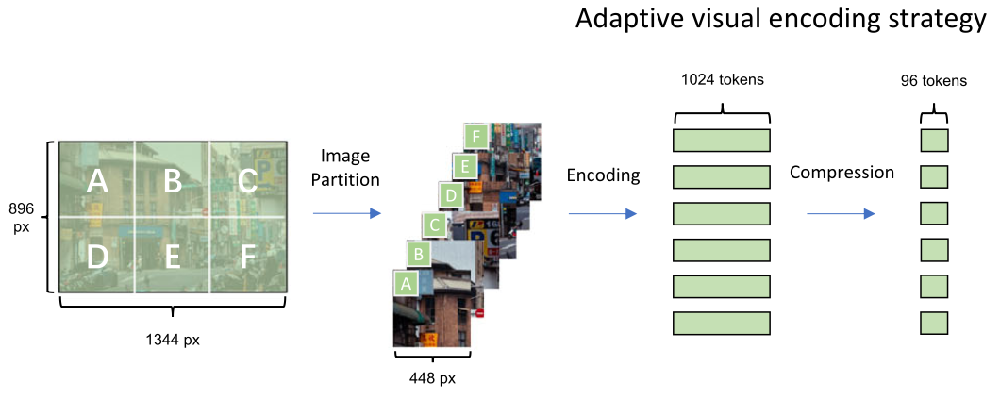

- Article: Efficient GPT-4V level multimodal large language model for deployment on edge devices
- Presenter: Anil Kamat, Satish K C
- Attendees: Hongsup Shin, Ivan Perez Avellaneda
Why this paper
As practitioners, we wonder how the multimodal models with impressive demo videos can actually be deployed in production, especially in edge devices. Models like GPT-4V and Gemini Pro are powerful, but they require cloud infrastructure, introduce latency, raise privacy concerns, and come with API costs that add up fast. For applications involving personal photos, medical imaging, or offline scenarios, cloud-based models face many challenges.
The MiniCPM-V paper claims that you can get GPT-4V-level performance from an 8B parameter model running on a smartphone. Not just “pretty good for mobile” performance, but actually outperforming GPT-4V on benchmarks while using a fraction of the resources. This is in alignment with recent developments in AI research where smaller models are catching up with the larger cloud-based models.
The paper is particularly interesting because of its use of various optimization techniques that help achieve good performance in terms of both training and deployment on edge devices. This is one of those papers that are packed with a variety of techniques, which provides a good learning opportunity.
Paper summary
MiniCPM-V is a series of lightweight multimodal models designed to bring GPT-4V-level capabilities to edge devices. The flagship model, MiniCPM-Llama3-V 2.5, has 8B parameters and claims to outperform GPT-4V-1106, Gemini Pro, and Claude 3 across 11 benchmarks in the OpenCompass evaluation suite. The main selling point is that it runs on a smartphone. The authors achieve this through a combination of architectural innovations, training strategies, and deployment optimizations.
Architecture Design

The MiniCPM-V architecture consists of three core components: a visual encoder, a compression layer, and a language model. The key architecture technique is the adaptive visual encoding mechanism, which allows efficient processing of high-resolution images while avoiding quadratic computational growth. Here, rather than processing entire images at once, the system divides high-resolution images into slices (maximum 10 slices) supporting up to 1.8M pixels total. Each slice undergoes position embedding interpolation to accommodate varying aspect ratios, then compresses visual tokens through a cross-attention mechanism. This compression reduces tokens from 1,024 per slice to either 64 or 96 tokens depending on the model variant, significantly reducing computational costs during subsequent processing. This design choice is particularly important because it allows the model to handle images of any aspect ratio without distortion or padding, while keeping the computational requirements manageable for edge devices with limited memory.
Training Methodology
The authors implemented a three-phase progressive learning strategy.
Phase 1: Pre-training (3 stages)
- Compression layer warmup
- Resolution extension to 448×448 pixels
- Adaptive visual encoding training using 570M+ images
The pre-training data included English and Chinese image-text pairs plus OCR datasets totaling approximately 570 million items, balancing data scale with quality.
Phase 2: Supervised Fine-Tuning
High-quality instruction datasets were used to teach the model to follow instructions and perform specific tasks. This is also where the model was trained for languages other than English and Chinese (20+ languages).
Phase 3: Alignment via RLAIF-V
The team developed the RLAIF-V (Reinforcement Learning from AI Feedback for Vision) framework, using AI-generated feedback combined with direct preference optimization (DPO) to reduce hallucination rates and improve trustworthiness. This alignment phase is critical for ensuring the model provides reliable outputs in real-world deployment scenarios.
Benchmark Performance
MiniCPM-V demonstrated impressive performance across multiple dimensions.
- General Capabilities: Superior to GPT-4V-1106 and Gemini Pro on OpenCompass (11 comprehensive benchmarks).
- Specialized Tasks
- OCR capabilities: Outperforms competitors on OCRBench, TextVQA, and DocVQA
- Hallucination rates: Lower than GPT-4V-1106 on Object HalBench
- Multilingual support: Demonstrated strong performance across 30+ languages
- Size-Performance Trade-off: The paper demonstrates that smaller models with better architectural and training designs can match or exceed the performance of much larger models, challenging the conventional wisdom that larger always means better.
The paper evaluates MiniCPM-V on a comprehensive suite of benchmarks.
General Multimodal Understanding
- OpenCompass: Meta-benchmark aggregating popular multimodal benchmarks for comprehensive performance evaluation
- MME: Tests perception (object recognition, counting, OCR) and cognition (reasoning, calculation) across a dozen subtasks
- MMBench: Bilingual multiple-choice questions across 20 fine-grained ability dimensions
- MMMU: College-level questions spanning multiple disciplines with expert-level knowledge requirements
- MathVista: Testing mathematical reasoning in visual contexts across multiple reasoning types
- LLaVA Bench: Daily-life visual chat instructions across conversation, description, and reasoning tasks
- RealWorldQA: Real-world images testing spatial understanding and commonsense reasoning
OCR and Document Understanding
- OCRBench: ~1,000 questions across multiple datasets evaluating text recognition, scene text VQA, and document understanding
- TextVQA: ~45,000 questions requiring reading and reasoning about text within images
- DocVQA: ~50,000 questions testing layout-aware reading comprehension on diverse document types
Hallucination
- Object HalBench: Measures object-based hallucination and factual grounding
Edge Deployment Optimization

Deploying the model on mobile devices required addressing severe memory and computational constraints. The authors implemented the following optimization techniques.
Memory Optimization: 4-bit quantization reducing memory footprint from 16-17GB to approximately 5GB, sequential loading of visual and language components to fit within mobile RAM limits.
Computational Optimization: Device-specific compilation reduced encoding latency, NPU integration reduced visual encoding on Snapdragon 8 Gen3 chips.
Real-world Performance: Testing on a Xiaomi 14 Pro smartphone achieved 8.2 tokens/second decoding throughput, which exceeds typical reading speed and enables practical interactive use.
Discussion
We thought the training techniques were sensible and well thought out. The adaptive visual encoding and compression mechanism reduces visual tokens from 1k per slice down to 64-96 tokens, which is quite significant, and the ablation study (Fig. 6e) shows its impact. By processing images in slices and using cross-attention compression, the model avoids the quadratic computational growth that plagues many vision transformers. This makes high-resolution image processing actually feasible on phones.
The multilingual generalization seems like a smart engineering practice. Instead of collecting massive amounts of multimodal training data in 20+ languages, they rely on Llama3’s existing multilingual capabilities. Build strong vision-language connections in English and Chinese, then let the LLM handle transfer to other languages. Nevertheless, how the model captures different and subtle nuances across all languages should be investigated further.
Finally, we found the paper quite comprehensive. We appreciated that the authors didn’t just present a model architecture, but they covered the full pipeline ranging from training techniques, extensive benchmarking, and actual edge device deployment with real performance numbers. This end-to-end approach makes the paper much more valuable for practitioners.
Why edge deployment matters
We also discussed the importance of edge deployment. First and foremost, this enables privacy. Sensitive visual data never has to leave your phone—personal photos, medical imaging, or confidential documents. Plus, offline capability means the model doesn’t suffer from connectivity issues when network access is unreliable or expensive. Edge deployment also has an economic advantage. Cloud API costs add up fast when you’re processing lots of images. For high-volume applications, edge deployment shifts costs from per-query API fees to one-time model deployment.
Although on-device processing eliminates network round-trips, as we can see in the paper, the best inference speed (on a Xiaomi 14 Pro) is still slower than cloud-based models. It seems interactive enough for many applications (faster than reading speed), but probably not fast enough for real-time video understanding. The authors acknowledge this limitation, which we appreciate.
Limitations
Although we appreciated that the authors used many different benchmark datasets, the benchmark performance can’t tell the whole story and more detailed evaluation would be needed. Besides, edge deployment introduces new concerns that benchmarks don’t capture. For instance, how does performance degrade when the phone is hot? What about battery drain? How does it handle device-to-device variation across different Android phones? These practical deployment questions aren’t addressed.
The paper’s model handles static images, and we have to acknowledge the modality limitation. True multimodal fusion (processing video + audio simultaneously) is mentioned as future work in the paper, but given that video is much more demanding than images, it’s unclear whether the edge deployment approach scales to these use cases.
Finally, we’d like more details on the training compute. The paper mentions model sizes and dataset scales, but gives almost no information about training compute, training time, or hardware requirements. For practitioners considering similar approaches, this information would be valuable.
If you found this post useful, you can cite it as:
@article{
austinmljc-2025-minicpm-v,
author = {Hongsup Shin},
title = {Efficient GPT-4V level multimodal large language model for deployment on edge devices},
year = {2025},
month = {12},
day = {18},
howpublished = {\url{https://austinmljournalclub.github.io}},
journal = {Austin ML Journal Club},
url = {https://austinmljournalclub.github.io/posts/20251218_minicpm_v/},
}